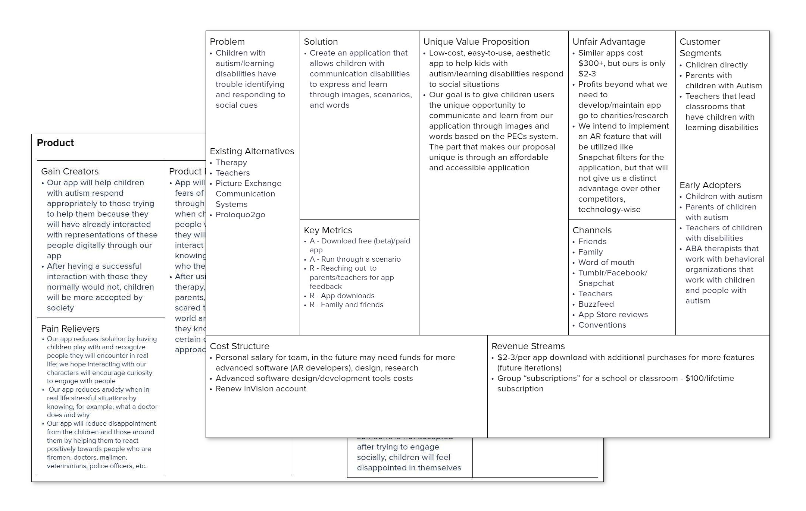

Understanding the Business Value
Before we could design our product, we determined its value in the market as well as our goals moving forward. By conducting a lean canvas and a value proposition canvas, we were able to see that our idea had value in the market, and would improve the lives of those affected by autism - not only children, but parents and teachers as well. Not only that, we were able to figure out our three-week, three-month, and three-year (3x3x3) goals.

Speaks Lean and Value Proposition Canvas
Understanding the User
When approaching the user research section of the project, we knew the best way to understand children with autism was through those who knew how to communicate with them, understanding them at a level that they themselves had difficulty explaining to others. We conducted ethnographic and subject matter expert interviews with Sarah Nguyen, who teaches children with autism, and her student aids, in order to get varying perspectives on how they engage with the children. We gathered that the best way they learned was through visual imagery and interactive, sensory elements.
Speaks User Interviews
Initial Design
The initial designs of our application focused on a mobile version of the app, as my research found that most children with autism are capable of using mobile devices as opposed to a desktop.
 Speaks Paper Prototype
Speaks Paper Prototype
Since we only had 10 weeks to flesh out this project, we were not able to have a fully-functional web application, however we were able to test our product using an Invision prototype, with the base designs created in Figma, as well as a beta web application. We focused on designing an engaging environment for the children, using bright colors and cartoon characters, limiting the amount of on-screen text for a more visual learning experience. Not only that, we gathered that children with autism find question-and-answer game was short and concise, focusing on the key elements needed for that specific job type so that the children would quickly and easily understand what they look like and what they do.
User Testing
We were given the opportunity to actually test our product with real users due to Sarah Nguyen, who teaches children with autism, allowing us to work with her students. It was evident that the children could not comprehend exactly what to do when they were given the application, but with verbal guidance they picked up the flow quickly, so quickly that our protoypes could not keep up - the screen changes were too slow, causing the children to mis-tap. Both lower and higher-functioning children were able to use the application, almost to the point where it was too easy for them - though that only applied to the mobile version of our application.
When it came to using our actual web application, we were only able to use it via desktop, since it would not load properly through our mobile devices. It was clear that lower-functioning children did not have the motor skills to use a mouse, however higher-functioning children were able to use the application fairly easily.

{kind=link}
{kind=link}